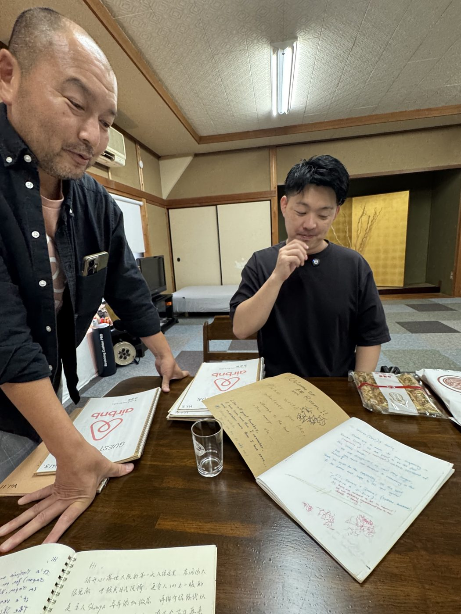
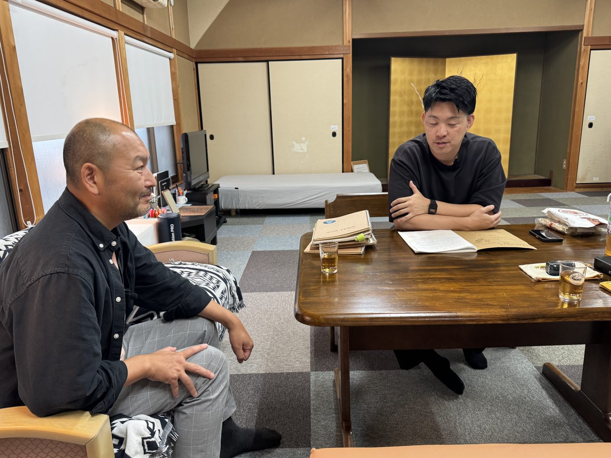
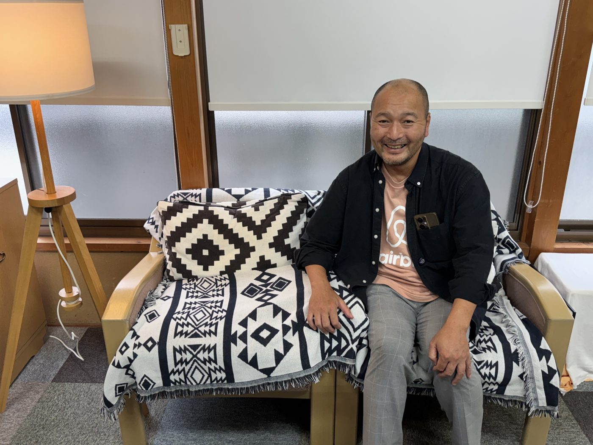
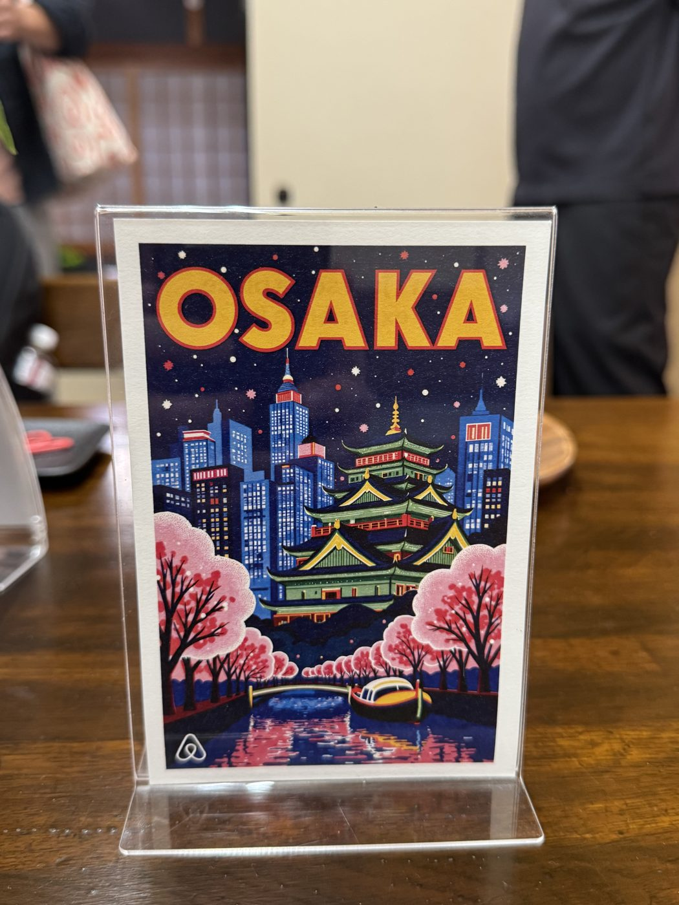

本編収録（ZEN HOUSE KAIZUKA）
本編収録
大阪の民泊ホスト・シンヤさんの原点からIVLP国務省視察、高校生民泊まで75分





音声 1本
シンヤさん本編（放送用・3回に分けて公開予定）
議事録
大阪・貝塚市のZEN HOUSE KAIZUKAで、Airbnb Host Advisory Board初期メンバーで大阪ホームシェアリングクラブ創設者のシンヤさんに、てつろー・ユウキが取材した特別編。10年前のロサンゼルスAirbnbオープンでの出会いから、上海での原体験、2015年の起業、本社との関わり、アドバイザリーボードでの活動、アメリカ国務省IVLPでの1ヶ月視察までを振り返った。後半は広域観光論とヒドゥンジェムズ、泉佐野で進む高校生民泊プロジェクトの話に発展し、日本人のパスポート保有率17%という数字も飛び出した。
話したこと 10件
- 10年前のロサンゼルスAirbnbオープンでの出会いと再会
- 上海でのAirbnb体験が生んだホスティングの原点
- 2015年の開業と最初のゲストのエピソード
- Belong Anywhereの理念とAirbnb一本のプラットフォーム選択
- 大阪ホームシェアリングクラブの発足と本社との関わり
- サンフランシスコ本社でのファイヤーサイドチャットとブライアン・チェスキー
- ホストアドバイザリーボードでの活動と宿泊・体験・サービスの多様化
- 国ごとの民泊規制の違い(ニューヨーク・パリ)
- アメリカ国務省IVLPでの1ヶ月・5都市視察
- 広域観光論・ヒドゥンジェムズ・高校生民泊プロジェクト
決まったこと・分かったこと
- 1シンヤさんとてつろーは10年前のロサンゼルスAirbnbオープンで初めて知り合った
- 2シンヤさんのホスティングのルーツは上海での原体験
- 32015年に大阪・貝塚市で開業、現在は8割がインバウンドで22カ国のゲストを受け入れている
- 4シンヤさんは大阪ホームシェアリングクラブ創設者・Airbnb Host Advisory Board初期メンバー
- 52024年にアメリカ国務省IVLPで日本代表8名の1人に選ばれ、ワシントンDCからサンフランシスコまで5都市を1ヶ月視察
- 6泉佐野のNPO法人キリンこども応援団で、高校生が民泊をスクラッチで立ち上げるプロジェクトにアドバイザーとして関わっている
ハイライト
実は私のルーツ、ホストとしてのルーツは上海にありまして
ホスティング原点の告白8:45 から聴く3時間10分後ぐらいにポンという通知音がありまして
人生初予約の瞬間12:15 から聴く国籍や人種、性的指向を全部取っ払って安心できる場所があるべきだという理念
Belong Anywhereの拡大解釈17:55 から聴く本社1階に社員250〜300人、バーンとステージが出来上がってたんですよ
無茶振り本社サプライズ23:37 から聴くニューヨーク市が民泊禁止したら結局闇民泊が増えたっていう
規制と実態の逆説41:03 から聴くアメリカ国務省のIVLPというプログラムに招待された
国務省招待プログラムの核心45:08 から聴く直訳すると隠された宝石、Hidden Gemsという言葉なんですけど
旅の醍醐味を言い表す一言56:39 から聴く日本人のパスポート保有率が17%、20年前の半分なんですよ
日本人の内向き化を示す数字1:07:47 から聴く
読み物
10年越しの再会とロサンゼルスの伝説イベント
Unite講演後のトイレでの偶然の再会から、10年前のロサンゼルスAirbnbオープンの話へ6発言
上海で芽生えた原点、2015年の開業
上海での宿泊体験がホスティングのルーツに。2015年、貝塚市で試行錯誤の開業が始まった6発言
Belong Anywhereへの愛と大阪ホームシェアリングクラブ
Airbnbの理念への共感が、大阪ホームシェアリングクラブ創設につながっていく5発言
本社訪問とホストアドバイザリーボード
2週間前の無茶振りでサンフランシスコ本社へ。そこからアドバイザリーボードでの活動が始まった6発言
シンヤさん22:29
それも確か2週間前とかに連絡が来て、2週間後にサンフランシスコまで飛びますかという話でした
シンヤさん23:37
いざ行ったら本社の1階のホールに社員が250名から300名くらい、バーンってステージが出来上がってるんですよ
てつろー31:33
ホストアドバイザリーボードという、どんなことをやるんですか
シンヤさん31:40
実際のフィードバックですね。各国のヒアリングをした上で幹部にフィードバックをするのが一番大きな役割です
シンヤさん36:10
今現在は体験のホストアドバイザリーボードというのもできていますし、サービスも昨年ローンチされました
てつろー36:56
急速にAirbnbが宿泊だけじゃないよっていう事業の多様化が起きてるなっていう
規制の国際比較とアメリカ国務省IVLP
ニューヨークとパリの規制の違いから、アメリカ国務省IVLPへの招待の経緯へ5発言
広域観光・高校生民泊・日本人のパスポート17%
広域収入とヒドゥンジェムズの持論から、泉佐野の高校生民泊プロジェクト、日本人の内向き化の話へ6発言
Todo
シンヤさん
ユウキ
てつろー
出てきた資料・ツール
会話に出たもの 6件
- ZEN HOUSE KAIZUKAこの日の収録会場、シンヤさんのリスティング
- みんらじ（ゼロからの民泊ガイドラジオ）この収録の番組本体
- 大阪ホームシェアリングクラブ20:42ごろ、シンヤさんが2017年に立ち上げメンバーとして発足した任意団体
- キリンこども応援団64:01ごろ、高校生民泊プロジェクトを運営する泉佐野のNPO法人
- Airbnbトラベルマップ29:35ごろ、過去に一緒に参加した人同士がつながれる新機能として言及
- Airbnb Host Advisory Board31:33ごろ、シンヤさんが2020〜21年発足時からの初期メンバー